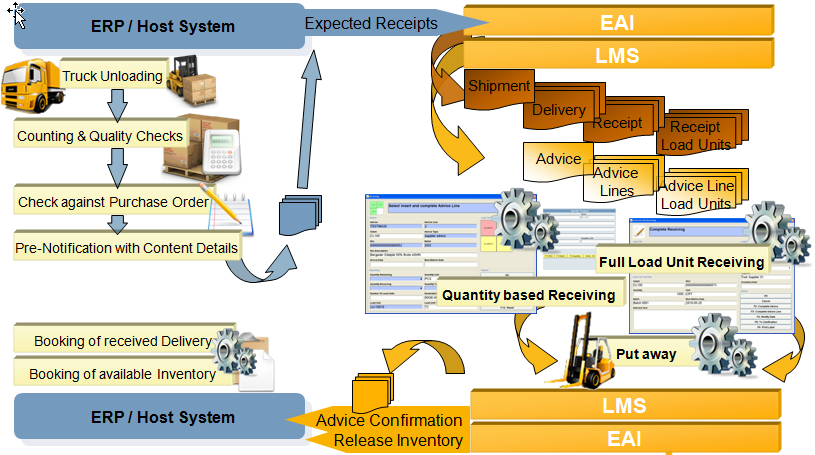
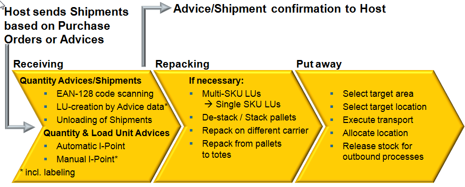
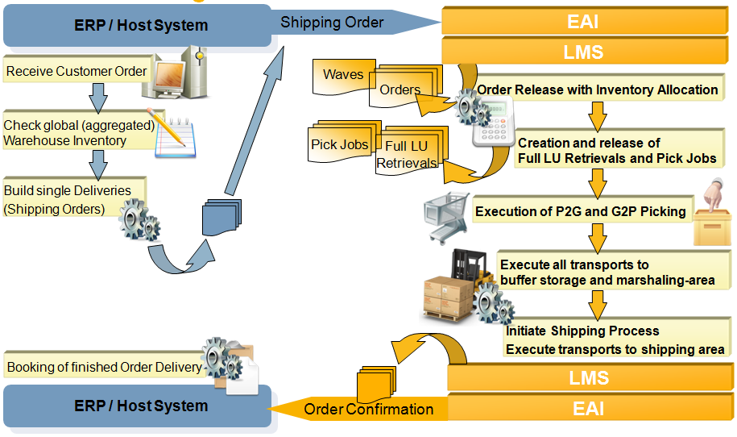
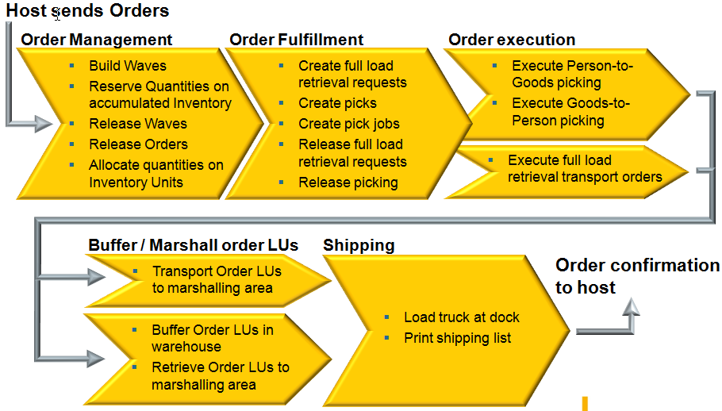

|
|
|
|

")
|

|
|
Overall Inbound Processes and its embedment in the overall logistical processes:

LMS Inbound Process Flow:

Dematic iQ® can receive already advised and unknown Load Units as well on the basis of Advices or multiple Deliveries within a Shipment related to Purchase Orders. Incoming inventory can be advised by the host system on the SKU Quantity level or on a detailed Load Unit level.
Receiving can be done manually with user interaction or automatically via automatic identification point (only if pre-advised Load Units). Automatic receiving includes procedures like automatic induction, scanning, weight & profile check and conveying. If necessary, EAN 128 labels can print for the Load Units.
Confirmation of receiving can be sent to a Host on the Advice or Delivery level or Load Unit level. The confirmation can be sent after receiving is finished or when Load Units are stored.
|
|
|
|
Overall Outbound Process and its embedment in the overall logistical processes:

LMS Outbound Process Flow:

Dematic iQ® executes orders sent by the host to create Load Units ready for delivery. Order Management is split into Order Planning, Order Fulfillment, and Order Execution.
Order Planning provides the ability to manually create Orders in the system if necessary. Orders can be grouped into Waves for execution. To assure that the Orders can be fulfilled, Order Management can reserve the required quantities on Aggregated Inventory level. This also enables a quick check for SKU availability for new Orders.
Order Fulfillment automatically releases Orders based on route, staging date, order type, and wave or a user can manually release Orders. The release type is configured as default for the order type or provided as part of the Order data by the host. Immediately after releasing the Orders for execution, Order Planning splits the requested SKU Quantities into Full Load Unit Retrievals and Picking Tasks. Full Load Unit Retrievals can be executed by automatic material handling equipment and/or by guided forklift trucks.
The required reservations of Load Units and pick quantities occur automatically. Full Load Unit Retrieval and Picking can be released at a different point in time as triggered by a schedule or an event. Or they can be released together at the same point in time. Already picked Order Load Units can be buffered in the warehouse if the Order is not yet released for Shipping.
Dematic iQ® supports multiple means of Picking. The main categories are Goods-to-Person and Person-to-Goods Picking. The different Pick Controllers are highly configurable and the workload is managed for each Pick Station or Picker Group independently. Dematic iQ® can control the sequence of retrieval to Goods-to-Person Picking Workstations and plans the pick path for Person-to-Goods picking activities to minimize walking/traveling times.
If the marshalling of order-related Dispatch Load Units or cartons is supported by any sorter, Order Fulfillment automatically manages those Sortation Orders and delegates the sortation execution to the underlying Sort Controller.
Dematic iQ® prints the required labels for Shipping and moves all order related Load Units to the Marshalling Area. Truck loading is supported by a loading list or guided by mobile terminals.